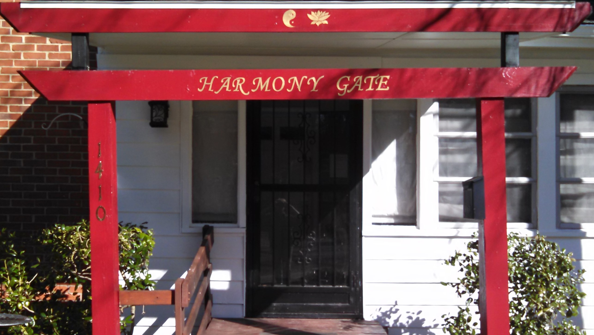
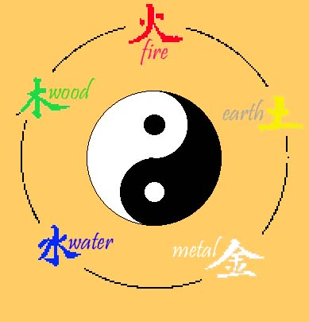

In the Chinese medical classics, the human being is considered to be a microcosm of the external environment; hence we have within our biorhythmic time clock energetic changes throughout each day as well as throughout every season of the year . Just as the external environment requires a balance of nature in order to avoid catastrophy, so...

...also does the human body requires balance in order to avoid or minimize disease. Five Element Acupuncture addresses disease and illness by way of recreating the natural balance among and between the elements within the human being as represented by associations with each organ system on a body/mind/spirit level.